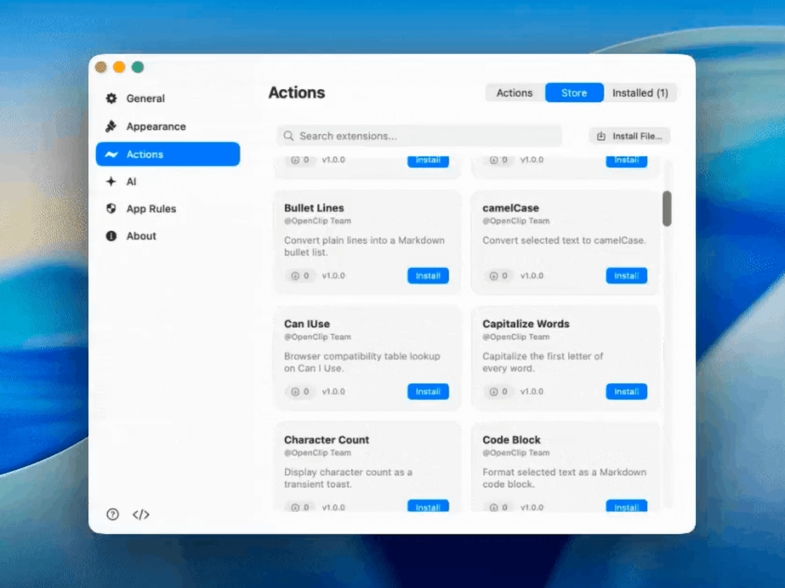
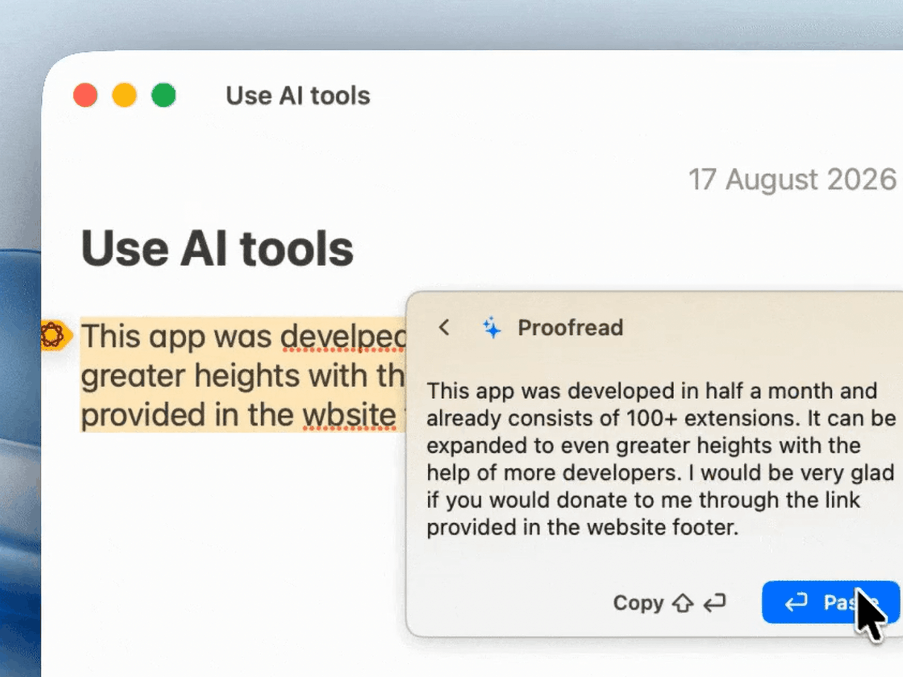
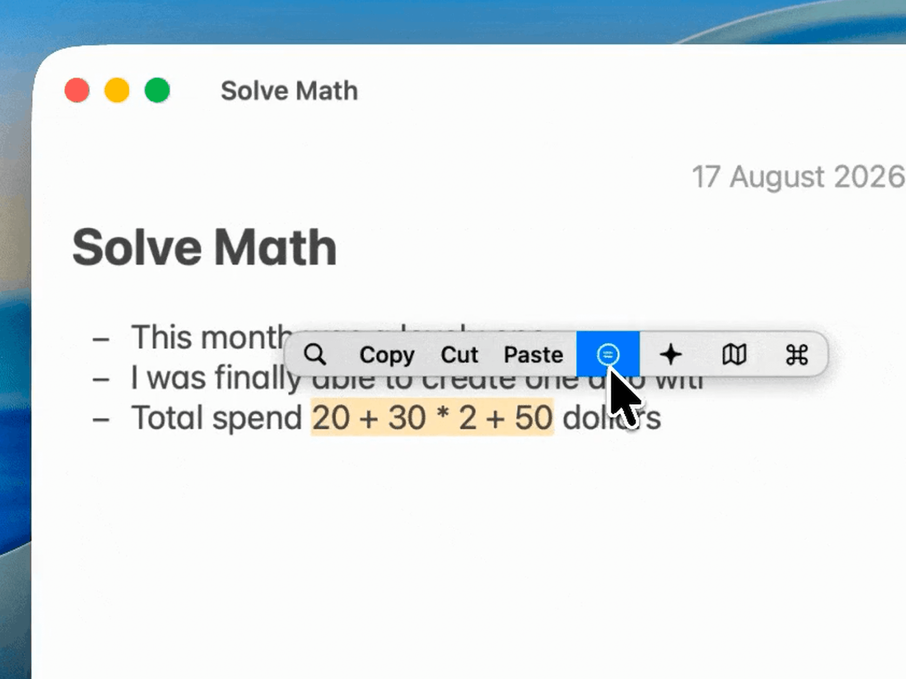

Navigy
Selected text, given superpowers across your Mac.
Navigy is an ultra-fast macOS menu bar application and floating context bar. Highlight any text in any Mac app, hit ⌥⌘C, and instantly transform, convert, summarize, or calculate without leaving your active workflow.
Interface in Motion
Captured directly from macOS Sonoma. Clean, distraction-free overlays that attach smoothly to your current cursor selection.



Engineered for Privacy & Speed
Navigy operates strictly within macOS security guidelines.
100% Local Execution
Your highlighted text is processed entirely within local memory. No keystroke loggers, no cloud tracking, and zero remote network requests.
Universal Binary
Hand-tuned native Swift code compiled for Apple Silicon M1/M2/M3/M4 and Intel processors with instantaneous cold start times.
Permission Transparency
Relies on macOS Accessibility APIs to locate selection bounds. Screen capture triggers strictly on explicit user hotkey invocation.
Menu Bar Resident
Unobtrusively docks in your menu bar. Easily configure global hotkeys, active tools, and ignore-lists for sensitive apps.
macOS Gatekeeper & Authorization Guide
Independent open-source binary without an Apple Developer subscription ($99/yr). Safe, verifiable, and running in under 30 seconds.
Why macOS Shows a Security Prompt
Because Navigy is 100% free, copyleft open source (AGPL-3.0), we do not pay an annual Apple Developer certificate fee. On first launch, macOS Gatekeeper may show: "Navigy cannot be opened because Apple cannot check it for malicious software". Navigy is completely auditable with public source code, zero analytics, and 100% offline text processing. Follow either method below to authorize launch.
Method 1: Control-Click (GUI)
RecommendedAuthorize Navigy directly through Finder without touching the command line.
-
1
Open the downloaded
Navigy.dmgand drag Navigy.app into your /Applications folder. - 2 In Finder, open /Applications, hold Control (or right-click) on Navigy.app, and choose Open from the menu.
- 3 In the security dialog asking "Are you sure you want to open it?", click Open. This permanently saves an exception for Navigy.
Tip: You can also go to System Settings → Privacy & Security, scroll down to Security, and click "Open Anyway".
Method 2: Strip Quarantine Flag
Instant CLIFor power users: strip macOS download quarantine flag in one terminal command.
- 1 Move Navigy.app to your /Applications folder.
- 2 Open Terminal.app (hit ⌘ Space and type Terminal).
- 3 Run the following command to remove the quarantine attribute:
xattr -cr /Applications/Navigy.app
Build from Source
Prefer to inspect and compile the code yourself? Navigy is 100% open source under AGPL-3.0. Compile universal binaries directly with Swift Package Manager.
# 1. Clone the official repository
git clone https://github.com/Voryn-Labs/navigy.git
cd navigy
# 2. Build release binary using Swift Package Manager
./scripts/build-app.sh
# 3. Launch compiled bundle
open dist/Navigy.appBuild Environment & Requirements
- ✓ macOS 14.0 Sonoma or macOS 15 Sequoia
- ✓ Xcode Command Line Tools (
xcode-select --install) - ✓ Swift 5.9+ compiler toolchain
- ✓ Pure Swift & AppKit · Zero third-party web runtimes
- ✓ Native universal binary (x86_64 + arm64)